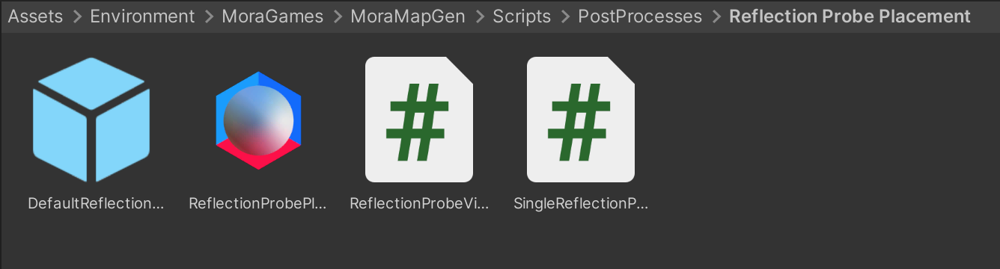
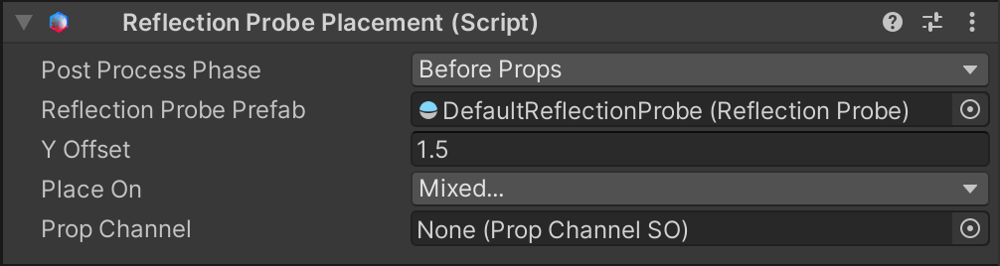
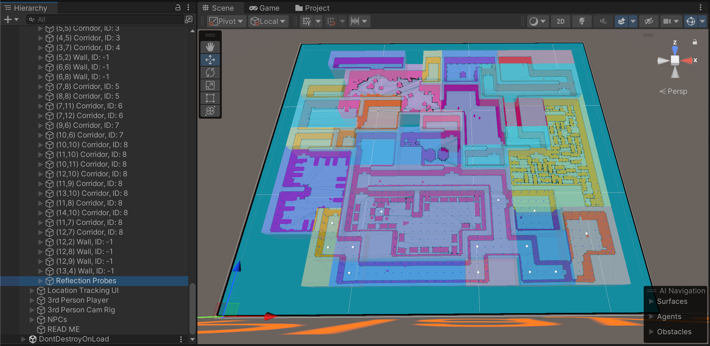
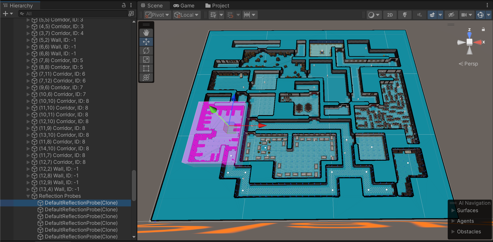

Reflection Probe Placement
While you could just use the prop placement system to place probes around your level, it wouldn’t be ideal, as the probes would just have arbitrary sizes. As an added convenience you can use the Reflection Probe Placement component which dynamically sizes the probes based on where they are placed in the generated map. The component script is located in the Scripts/PostProcesses/Reflection Probe Placement folder:

Setting up Reflection Probe Placement
Add the Reflection Probe Placement component to the same GameObject as your MoraMapGen component. This component implements the IMapGenPostProcess interface which the MapGen process will trigger at the specified Post-Process Phase.

Post Process Phase
Specify what phase of the post-process step the Reflection Probe Placement happens. (See Create Your Own MapGen Post-Processes to learn more about Post Process Phases.)
Reflection Probe Prefab
The prefab to place, which must include a Reflection Probe component at the root level.
Y Offset
The Y position offset from the ground to apply when spawning the prefab.
Place On
Specify what type of Prop Spots to place probes on.
Prop Channel
(Only shown if On Prop Spot is enabled in Place On.) Specify the Prop Channel to determine which Prop Spots probes should be placed on.
Visualizing Reflection Probe Placement
If you select the generated “Reflection Probes” GameObject in the hierarchy, which is a child of your MoraMapGen GameObject, you can see a visualization of where reflection probes and their bounds are in the Scene view:

If you select one of the child probe instances, you can see a visualization of just that probe:
